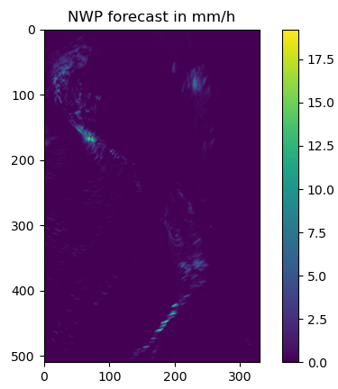
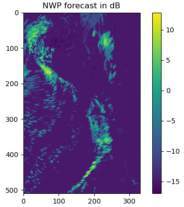

Locate the input data¶
Locate radar data¶
First we have to go back 2 hours (there are a total of 3 hrs data considering the data for the current analysis):
raincast_analysis_date = datetime.datetime(2020, 3, 9, 5, 0)
radar_data_source = '/tmp/raincast/download/radar/regrid'
RADAR_FILENAME = 'cappi_reflectivity_{valid_time}.nc'
accum_len_in_min = 60
radar_num_pre_files = 2
fns_radar = io.find_by_date(
raincast_analysis_date, radar_data_source,
'', RADAR_FILENAME.format(valid_time='%Y%m%d%H%M')[:-3], 'nc',
accum_len_in_min, num_prev_files=radar_num_pre_files)
Through the above codes, we have the output fns_radar:
fns_radar =
(['/tmp/raincast/download/radar/regrid/cappi_reflectivity_202003090300.nc',
'/tmp/raincast/download/radar/regrid/cappi_reflectivity_202003090400.nc',
'/tmp/raincast/download/radar/regrid//cappi_reflectivity_202003090500.nc'],
[datetime.datetime(2020, 3, 9, 3, 0),
datetime.datetime(2020, 3, 9, 4, 0),
datetime.datetime(2020, 3, 9, 5, 0)])
Locate NWP forecasts data¶
Still, assuming that the RainCast analysis time is 05 UTC 9 Mar 2020, the following codes get the required NWP data:
raincast_analysis_date = datetime.datetime(2020, 3, 9, 5, 0)
model_data_source = '/tmp/raincast/download/nwp/regrid/nz4kmN-NCEP/'
model_analysis_date = datetime.datetime(2020, 3, 8, 12, 0)
WRF_FILENAME = 'wrf_hourly_{model_name}_d02_{valid_time}'
accum_len_in_min = 60
n_leadtimes = 120
fns_model = io.find_by_date(
raincast_analysis_date, model_data_source,
model_analysis_date.strftime('%Y%m%d%H'),
WRF_FILENAME.format(model_name=model_name,
valid_time='%Y-%m-%d_%H:%M:%S'),
'nc', accum_len_in_min, num_prev_files=1,
num_next_files=int(n_leadtimes/accum_len_in_min))
The output fns_model is:
fns_model =
(['/tmp/raincast/download/nwp/regrid/nz4kmN-NCEP/2020030812/wrf_hourly_nz4kmN-NCEP_d02_2020-03-09_04:00:00.nc',
'/tmp/raincast/download/nwp/regrid/nz4kmN-NCEP/2020030812/wrf_hourly_nz4kmN-NCEP_d02_2020-03-09_05:00:00.nc',
'/tmp/raincast/download/nwp/regrid/nz4kmN-NCEP/2020030812/wrf_hourly_nz4kmN-NCEP_d02_2020-03-09_06:00:00.nc',
'/tmp/raincast/download/nwp/regrid/nz4kmN-NCEP/2020030812/wrf_hourly_nz4kmN-NCEP_d02_2020-03-09_07:00:00.nc'],
[datetime.datetime(2020, 3, 9, 4, 0),
datetime.datetime(2020, 3, 9, 5, 0),
datetime.datetime(2020, 3, 9, 6, 0),
datetime.datetime(2020, 3, 9, 7, 0)])
Apparently the unit from NWP forecasts is mm/h, however RainCast runs at the unit of dB, therefore both the NWP data and reference NWP data are converted to dB
Reference NWP data¶
We also need to have reference NWP data to make the radar data having the similar magnitudes/scales, so the reference NWP has the same timestep as radar data:
fns_model_ref =
(['/tmp/raincast/download/nwp/regrid/nz4kmN-NCEP/2020030812/wrf_hourly_nz4kmN-NCEP_d02_2020-03-09_02:00:00.nc',
'/tmp/raincast/download/nwp/regrid/nz4kmN-NCEP/2020030812/wrf_hourly_nz4kmN-NCEP_d02_2020-03-09_03:00:00.nc',
'/tmp/raincast/download/nwp/regrid/nz4kmN-NCEP/2020030812/wrf_hourly_nz4kmN-NCEP_d02_2020-03-09_04:00:00.nc',
'/tmp/raincast/download/nwp/regrid/nz4kmN-NCEP/2020030812/wrf_hourly_nz4kmN-NCEP_d02_2020-03-09_05:00:00.nc'],
[datetime.datetime(2020, 3, 9, 2, 0),
datetime.datetime(2020, 3, 9, 3, 0),
datetime.datetime(2020, 3, 9, 4, 0),
datetime.datetime(2020, 3, 9, 5, 0)])
Convert data to dB¶
NWP forecasts¶
Apparently the unit from NWP forecasts is mm/h, however RainCast runs at the unit of dB, therefore both the NWP data and reference NWP data are converted to dB using the following subroutine:
def prepare_raincast_inputs(R_steps, metadata_steps, thres=0.001):
R_steps, metadata_steps = transformation.dB_transform(
R_steps, metadata_steps, threshold=thres, zerovalue=-15.0)
# Set missing values with the fill value
R_steps[~numpy.isfinite(R_steps)] = -15.0
return R_steps, metadata_steps
The following gives an example for the NWP forecasts before and after the conversion
 {kind=link}
{kind=link}
The output from this subroutine is stored in a 3D numpy array follows [time, x, y], where time starts from the RainCast analysis time, and ends at the required prognisos. (For the reference model, it ends at the RainCast analysis time, while starts from the begining of goback hours)
rainfall observation (radar)¶
For radar data, first the dBZ is converted to mm/h using:
R_radar, metadata_radar = conversion.to_rainrate(R_radar, metadata_radar)
{kind=link}
{kind=link}
then the radar data in mm/h is matched with the reference NWP data using:
R_radar, radar_mask = matching_radar_nwp_cdf(R_radar, deepcopy(R_model_ref))
{kind=link}
{kind=link}
the radar derived rain then is combined with NWP data (in the area where radar data is masked) and then they are converted back to dB:
R_radar[numpy.where(numpy.isnan(R_radar))] = R_model_ref[
numpy.where(numpy.isnan(R_radar))]
if rainrate_threshold:
R_radar[R_radar < rainrate_threshold] = 0.0
R_radar, metadata_radar = raincast_utils.prepare_raincast_inputs(
R_radar, metadata_radar)
{kind=link}
After the conversion, similar to R_model, R_radar is stored in a 3D array as [time, x, y], where time ends at the RainCast analysis time and starts from the beginning of goback hours (e.g. 2 hours ago).